PlateMaps — visual fixes, before and after
8 changes from the HIG audit. Every "after" was made by injecting CSS into the running app, so no source code has changed yet. Pick the numbers you want applied.
Red boxes are tap areas under 28px, amber boxes are 28–43px, green boxes are 44px or more (Apple's minimum).
#3Status bar readable on the map
On the dark map the clock and battery stay black, so they almost disappear. Switch them to white while the map is open.
@capacitor/status-bar (new plugin) · map open/close hook
simulated — native bar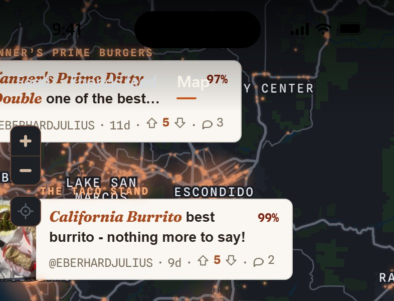
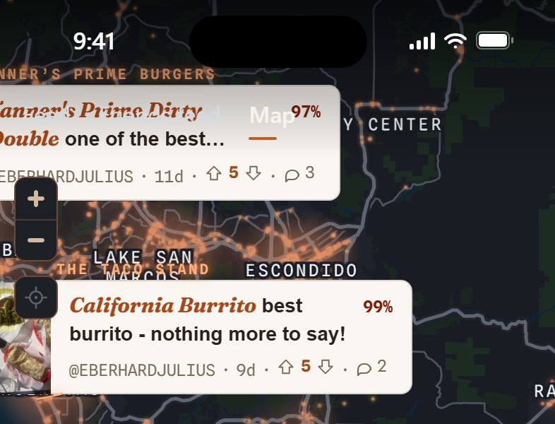
#5Map buttons big enough to tap
Zoom and locate are 29px. Make them 44px. They look about the same, just easier to hit.
globals.css:479, :517
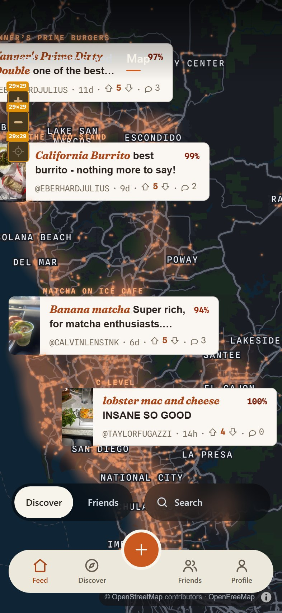
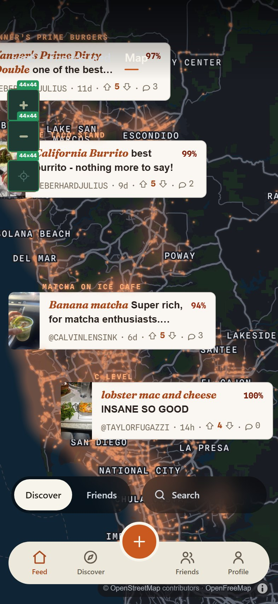
#6No text smaller than 11px
52 pieces of text on Discover are 9–10px (cuisine, "to a score", tab labels; outlined in red). Raise them to 11px and darken the lightest grey so it passes contrast.
PhoneRestaurantCardGrid · PhoneRestaurantCardTiny:40,45 · zinc-400 → zinc-500
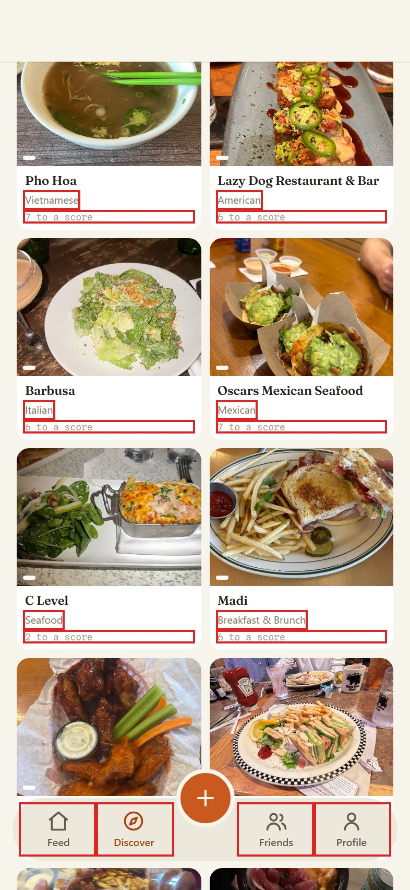
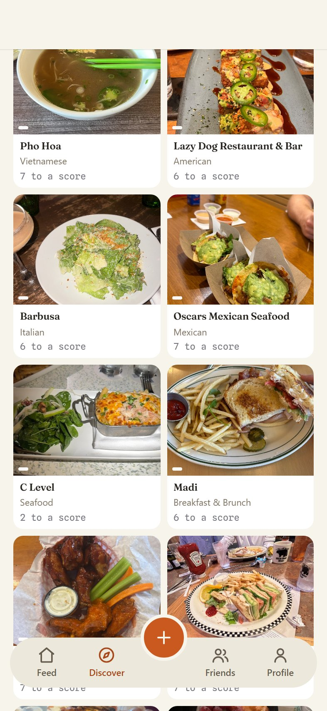
#7Dish and restaurant links easier to tap
The dish name and restaurant name on a feed card are only 15–16px tall. Add invisible padding so the tap area reaches 44px. The text doesn't move.
PhoneFeedPostCard.tsx:136–140, 177–181
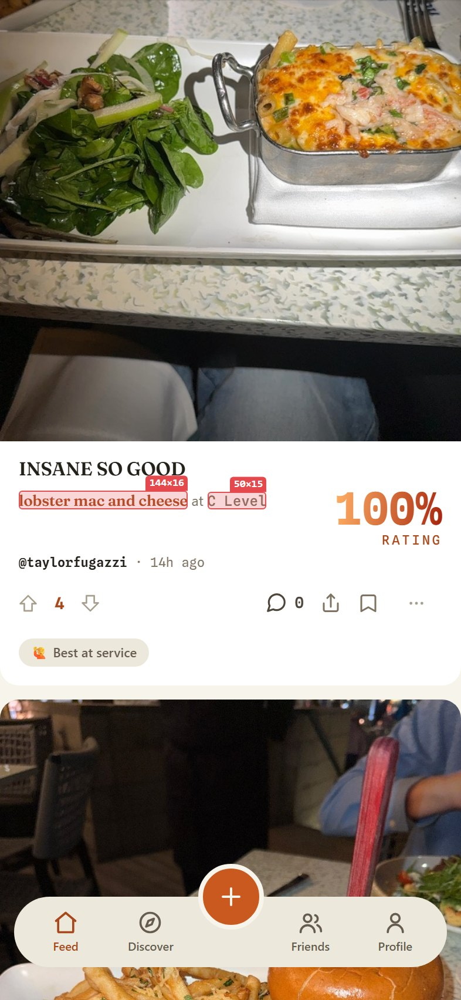
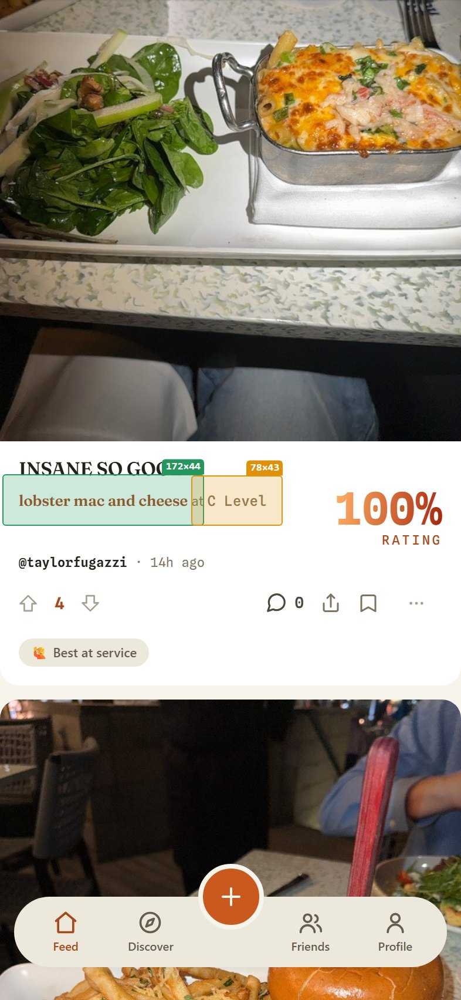
#8Comment vote arrows and collapse toggle
Comment arrows are 24px wide and the collapse toggle is 20×24. Widen the arrows to 32px and grow the toggle.
CommentsScreen.tsx (vote buttons w-6 → w-8; toggle line 355 → h-11 w-8)
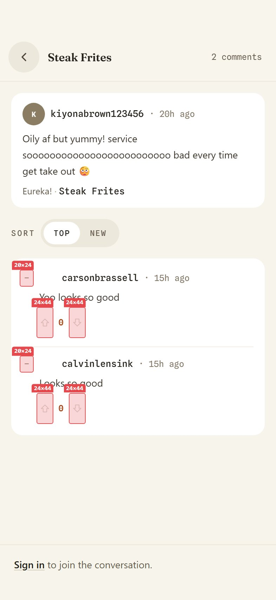
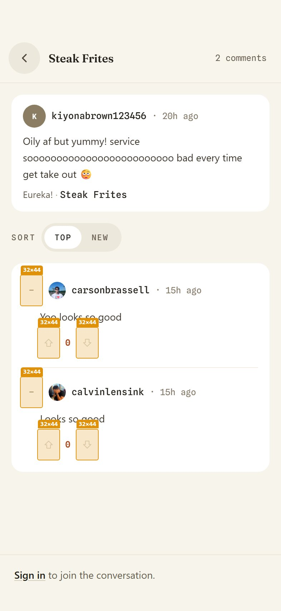
#9Ask before throwing away a post
Backing out of the composer drops your photo and notes with no warning. Show a confirm sheet first. (The composer needs sign-in, so the background here is the sign-in screen. The sheet is the part to look at.)
m/post/page.tsx:429, 450, 789 · CameraCapture.tsx:953
mock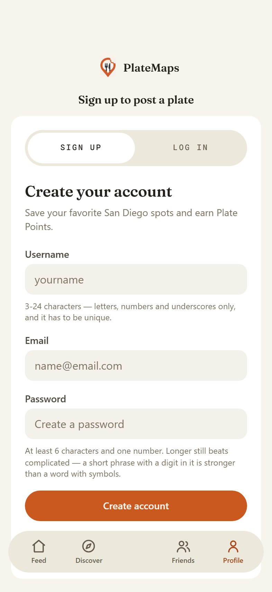
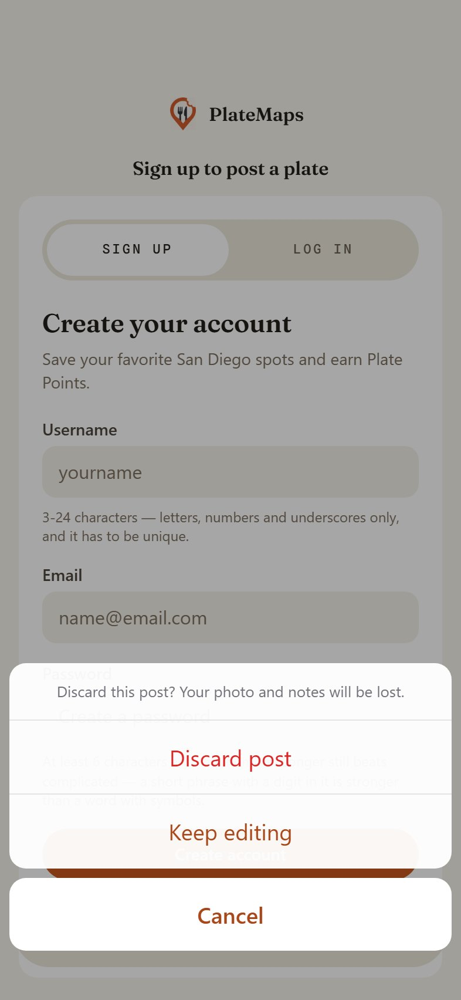
#10Respect the iPhone's Larger Text setting
If someone turns up text size in iOS Settings, PlateMaps ignores it. This shows the feed at 135%.
globals.css (@supports (font: -apple-system-body)) · px → rem on body text
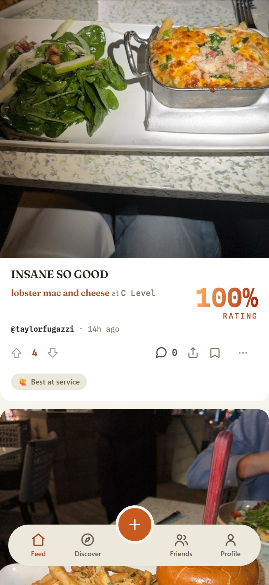
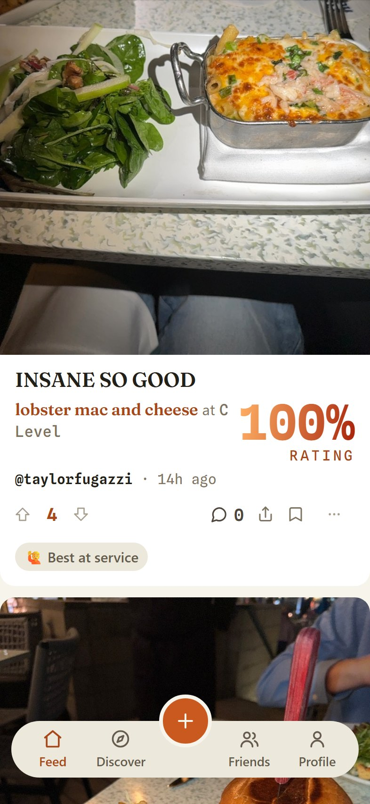
#11Report and Block on the map's plate sheet
The feed card's ⋯ menu already has Report and Block. The plate sheet you get from the map has neither, and Apple requires both for user posts. Reuse the feed's menu.
PlateDetailSheet.tsx:707, 955 · reuse PhoneFeedPostCard.tsx:866–883
mock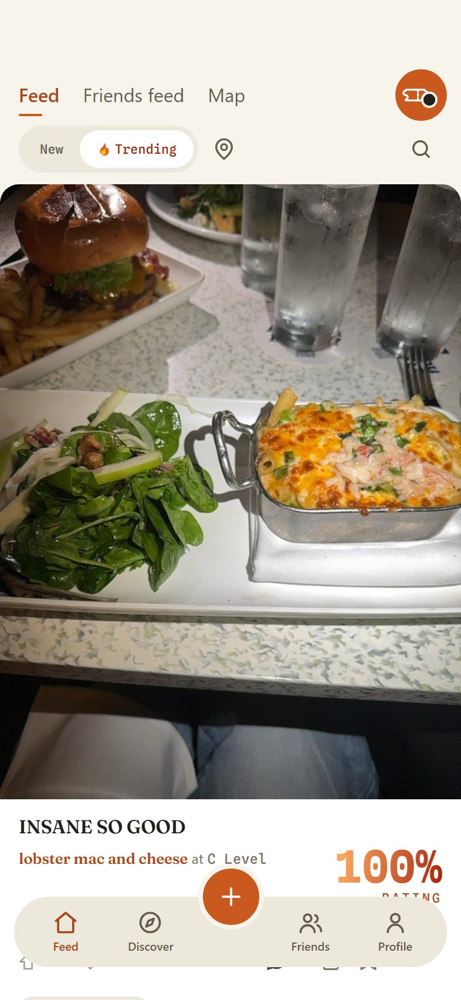
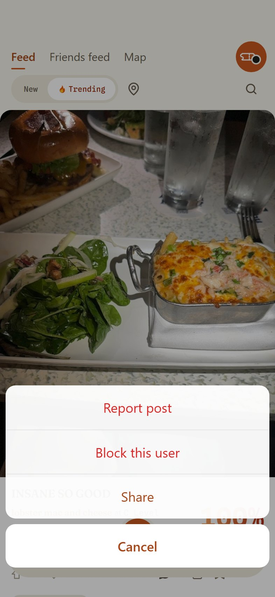